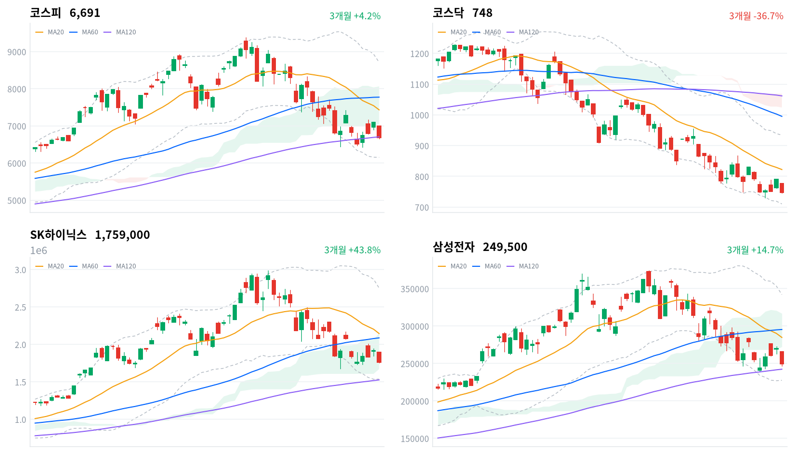

오늘 급락의 출발점은 미국-이란 군사 긴장 재점화에 따른 유가 급등과 미 10년물 국채금리 4.70%대 상회였고, 여기에 간밤 알파벳(-6~7%대)·테슬라(-14%대)의 AI 설비투자發 잉여현금흐름 우려가 겹쳤다. 세 악재가 국내 반도체 대형주로 직접 전이되며 삼성전자·SK하이닉스가 각각 7%대·8%대 급락했고, 코스피(-5.72%)·코스닥(-5.32%)이 전일 급등분을 하루 만에 반납했다.
외국인·기관의 동반 순매도(코스피 합계 5조2,197억원, 당일 잠정)와 지수 급락은 방향이 일치하고, 비차익 프로그램 순매도(2조5,637억원)가 이를 뒷받침해 오늘 매도가 기계적 차익거래가 아닌 방향성 자금이었음을 보여준다. 다만 개인이 5조1,782억원을 순매수하고 SK하이닉스 레버리지 ETF 거래대금이 인버스를 웃돌았다는 점은, 매도 압력의 상당 부분을 저가매수 심리가 흡수했다는 뜻이기도 하다.
다음 거래일에는 오늘 잠정치인 외국인·기관 수급이 확정되며 매도 강도가 유지되는지부터 확인해야 한다. 기술적으로는 코스피가 MA120(6,706.35) 바로 아래에 걸쳐 있어 이 지지선의 회복 여부가 반등 지속성을 가늠할 첫 관문이고, 이를 내주면 스윙 저점(6,429.03)·볼린저 하단(6,153.22)까지 낙폭이 확대될 수 있다. 대외적으로는 국제유가·미 국채금리 흐름과 남은 빅테크 실적 발표, 국내적으로는 7월 31일 시행되는 단일종목 레버리지 ETF 규제가 개인 수급에 미칠 영향이 다음 관전 포인트다.
| 지수 | 종가 | 등락률 | 일중 고가 / 저가 |
|---|---|---|---|
| 코스피 | 6,690.62 | -5.72% | 7,000.78 / 6,650.41 |
| 코스닥 | 748.22 | -5.32% | — |
코스피는 전일 종가(7,096.89) 대비 급락 출발해 시가 7,000.78로 개장했다. 이 시가가 그대로 이날 고가가 됐다는 점이 눈에 띄는데, 개장 이후 뚜렷한 반등 없이 낙폭을 계속 키운 하루였다.
오전 내내 매도세가 이어지며 9시30분 6,864.62까지 밀렸고, 10~11시대 6,780~6,895 구간에서 등락하다 정오 무렵인 12시 6,681.57까지 낙폭을 키웠다. 이 구간을 지나며 이날 장중 저가(6,650.41)에 근접한 저점이 형성됐다.
오후 들어 12시30분 6,714.02, 14시30분 6,753.34까지 부분 반등을 시도했으나 낙폭을 되돌리기엔 역부족이었다. 마감 직전 30분은 6,690선 안팎에서 등락하다 6,690.62(-5.72%)로 거래를 마쳤다.
이날 급락은 미국-이란 군사 긴장 재점화에 따른 국제유가 급등(브렌트유 배럴당 100달러 근접)과 미 10년물 국채금리의 4.70%대 상회, 그리고 간밤 뉴욕증시에서 '매그니피센트7' 중 처음 실적을 낸 알파벳(-6~7%대)·테슬라(-14%대)의 AI 설비투자發 잉여현금흐름 우려가 겹친 결과다. 이 세 악재가 국내 반도체 대형주(삼성전자·SK하이닉스)로 직접 전이되며 나스닥(-2.15%)보다 큰 낙폭을 국내 증시에 안겼고, 코스닥에서는 급락 과정에서 프로그램 매도 일시 정지 조치(사이드카)가 발동된 것으로 보도됐다.
일중 궤적은 코스피 30분봉 기준이며 코스닥 일중 고가·저가는 이번 데이터 파이프라인에 미포함. 촉매 배경은 뉴데일리·한국일보·newspim·etoday·뉴시스·Seoul Economic Daily 보도 참조.

최근 3개월 일봉(캔들)에 이동평균(20·60·120일)·볼린저밴드(20일±2σ)·일목 구름대를 오버레이 — 코스피·코스닥·SK하이닉스·삼성전자, 상승 녹색·하락 적색.
위 일봉 차트의 이동평균(20·60·120일)·볼린저밴드(20일±2σ)·일목 구름대를 종가 기준으로 계산한 조건부 시나리오다. 오늘 급락으로 4종 모두 단기 이동평균 아래로 밀렸고, 코스피는 MA120 바로 아래, 코스닥은 완연한 역배열 국면이라 지지선 사수 여부가 다음 거래일의 핵심 변수다.
코스피는 종가 6,690.62포인트로 MA20(7,433.13)·MA60(7,774.37)을 밑돌고 구름(7,051.95~8,063.52) 아래에 있어 추세는 여전히 혼조다. 특히 MA120(6,706.35)을 근소하게 밑돌아(괴리율 -0.23%) 이 지지선의 회복 여부가 단기 방향의 첫 관문이다. MA120 6,706.35를 되찾으면 일목 전환선 6,979.05를 거쳐 구름 하단 7,051.95, 나아가 MA20 7,433.13까지 반등 여지가 열린다. 반대로 이 구간을 다시 내주면 스윙 저점 6,429.03, 볼린저 하단 6,153.22까지 밀릴 수 있다.
코스닥은 종가 748.22포인트로 MA20(822.23)·MA60(995.20)·MA120(1,061.80)이 모두 위에 쌓인 역배열이라 하락 추세가 뚜렷하다. 구름(1,024.13~1,068.94)과는 아직 300포인트 가까이 떨어져 있어 오늘의 반등이 추세 전환으로 이어지기는 이르다. 일목 전환선 799.10과 MA20 822.23을 차례로 넘어서면 일목 기준선 881.18·볼린저 상단 934.10을 거쳐 스윙 고점(20일) 955.45까지 반등 여지가 있고, 스윙 저점 730.81·볼린저 하단 710.35를 이탈하면 신저점 탐색이 불가피하다.
SK하이닉스는 정배열(MA20 2,144,950원>MA60 2,087,233원>MA120 1,525,983원)이 유지되는 가운데 구름(1,670,500~2,147,750원) 안에 있는 눌림목 구간으로, 종가 1,759,000원이 그 안쪽에 자리한다. MA60 2,087,233원을 회복하면 MA20이자 구름 상단인 2,144,950~2,147,750원, 이어 일목 기준선 2,332,500원을 거쳐 볼린저 상단 2,753,068원·스윙 고점 2,880,000~2,987,000원까지 반등 여력이 있다. 구름 하단 1,670,500원·스윙 저점(20일) 1,678,000원을 동시에 내주면 MA120 1,525,983원·볼린저 하단 1,536,832원 부근, 최후에는 스윙 저점(60일) 1,249,000원까지 조정이 열린다.
삼성전자는 구름 하단(272,500원) 아래에서 MA120(242,386원) 바로 위에 걸쳐 있는 혼조 구간으로, 이 지지선을 지키는지가 단기 방향을 가른다. 일목 전환선 266,250원·구름 하단 272,500원을 차례로 넘어서면 MA20 284,800원·MA60 295,442원을 거쳐 구름 상단 316,875원, 볼린저 상단 342,051원·스윙 고점 356,500~374,500원까지 반등 여지가 있다. 반대로 MA120 242,386원과 스윙 저점(20일) 240,000원을 동시에 이탈하면 볼린저 하단 227,549원, 최후 지지선인 스윙 저점(60일) 218,500원까지 밀릴 수 있다.
기계적으로 계산된 조건부 기술 셋업이며 투자 권유가 아니다. 레벨은 익일 종가로 갱신된다.
| 순매수 (억원) | 개인 | 외국인 | 기관 |
|---|---|---|---|
| 코스피 | +51,782 | -32,683 | -19,514 |
| 코스닥 | +4,881 | -1,315 | -3,580 |
코스피에서는 외국인이 3조2,683억원(당일 잠정)을 순매도하며 전날까지 이어온 4거래일 연속 순매수 흐름을 끊었다. 기관도 1조9,514억원(당일 잠정) 순매도로 방향을 같이 해, 두 매수 주체가 동시에 지수를 끌어내렸다.
반면 개인은 5조1,782억원(당일 잠정)을 순매수하며 정반대로 움직였다. 전날(7/23) 2조2,077억원, 전전날(7/22) 1조2,176억원을 순매도해 랠리 국면에서는 차익실현에 나섰던 개인이, 오늘 급락장에서는 대규모 역발상 매수로 돌아선 셈이다.
외국인·기관의 동반 매도와 지수 급락 방향이 일치한다는 점에서 오늘 수급은 낙폭을 설명하기에 충분하다. 다만 개인 순매수 규모(5조1,782억원)가 외국인·기관 순매도 합계(5조2,197억원)에 근접할 만큼 컸다는 점은, 저가 매수 심리가 매도 압력을 상당 부분 흡수했다는 뜻이기도 하다. 코스닥도 같은 구도로, 외국인 1,315억원·기관 3,580억원이 각각 순매도(당일 잠정)한 반면 개인은 4,881억원을 순매수해 매도 사이드카가 발동될 정도의 낙폭에서도 저가매수는 이어졌다. 오늘 수치는 모두 잠정치라 익일 확정 과정에서 규모가 조정될 수 있다.
| 순매수 (억원) | 차익거래 | 비차익거래 | 전체 |
|---|---|---|---|
| 코스피 | -4,448 | -25,637 | -30,085 |
| 코스닥 | -3 | -1,619 | -1,622 |
오늘 프로그램 매매도 비차익거래가 매도를 주도했다. 코스피 비차익 순매도가 2조5,637억원에 달해 차익거래 순매도(4,448억원)를 크게 웃돌았는데, 이는 선물·현물 가격차를 노린 기계적 차익거래보다 바스켓 단위의 방향성 매도가 낙폭을 키웠다는 뜻이다. 이 흐름은 외국인 순매도(3조2,683억원, 당일 잠정)와 방향이 일치해, 비차익 매도의 상당 부분이 외국인 자금일 가능성을 시사한다. 코스닥도 비차익 1,619억원 순매도로 낙폭에 가세했다.
수급은 발행 시점 기준 당일(2026-07-24) 잠정치이며, 익일 확정 과정에서 조정될 수 있다.
| 종목·그룹 | 구분 | 거래대금 |
|---|---|---|
| SK하이닉스 | 개별종목 | 8.89조 |
| 삼성전자 | 개별종목 | 6.63조 |
| SK하이닉스 레버리지 | 단일종목 롱 ×3 | 4.59조 |
| SK하이닉스 인버스 | 단일종목 숏 ×1 | 3.63조 |
| 지수 레버리지 ETF | 지수 롱 ×2 | 1.97조 |
| 지수 인버스 ETF | 지수 숏 ×6 | 1.89조 |
| SK이터닉스 | 개별종목 | 1.71조 |
| 삼성전자 레버리지 | 단일종목 롱 ×2 | 1.69조 |
| KODEX 200 | 지수 ETF | 1.68조 |
| HD현대에너지솔루션 | 개별종목 | 0.61조 |
거래대금 최상위도 어제에 이어 반도체 두 종목이 휩쓸었다. SK하이닉스가 8.89조원으로 1위, 삼성전자(6.63조)가 2위를 지켰고, 두 종목의 단일종목 레버리지·인버스 ETF까지 합치면 반도체 대형주 관련 거래대금은 25조원을 웃돈다.
방향성 심리를 갈라보면 SK하이닉스는 레버리지(롱) 4.59조원이 인버스(숏) 3.63조원을 앞섰고, 지수 ETF에서도 레버리지(1.97조)가 인버스(1.89조)를 웃돌아 이 정도 급락에도 개인 투자자의 상승 베팅이 매도 베팅보다 우위를 유지했다. 이는 오늘 개인이 현물시장에서도 5조1,782억원을 순매수(당일 잠정)한 흐름과 궤를 같이한다.
SK이터닉스(1.71조)와 HD현대에너지솔루션(0.61조)도 상위권에 이름을 올려 자금 쏠림이 반도체 대형주에 국한되지 않았음을 보여준다. 다만 이 두 종목의 급락장 속 구체적 등락 배경은 이번 리서치에서 확인되지 않았다.
거래대금은 정규화 집계 — 같은 기초자산 ETF를 방향별로 묶고 해외지수 ETF는 제외했다. 원자료는 백만원 단위이며 표에는 조원으로 환산했다.
대표 섹터 ETF 기준 1일 수익률은 헬스케어(+1.27%)를 제외한 전 섹터가 하락했다. 특히 반도체(-8.52%)·로봇(-8.59%)·자동차(-8.46%)의 낙폭이 두드러졌고 2차전지(-5.35%)·증권(-4.49%)·소프트웨어(-3.82%)도 큰 폭으로 밀렸다.
세부 GICS 업종(kr_industry.json, 60개) 데이터로 교차 확인하면 그림이 조금 다르다. 60개 업종 중 24개는 오히려 상승 마감했는데, 1위 제약(+4.24%)을 비롯해 다각화된통신서비스(+2.72%)·포장재(+2.57%)·비철금속(+2.32%) 등은 breadth 기준으로도 '폭넓은 상승 주도'로 확인됐다. 반면 해운사(+2.29%)는 상승률로는 5위권이지만 breadth 0.182에 그쳐 '좁은 상승·개별종목'으로 분류돼, 상승률만으로 주도 업종이라 부르기는 어렵다.
하락 세부업종 상위는 창업투자(-3.08%)·디스플레이장비및부품(-3.05%)·생물공학(-2.9%)·인터넷과카탈로그소매(-2.8%)·백화점과일반상점(-2.75%) 등으로, 반도체·기술 밸류체인과 성장주 전반의 약세와 궤를 같이한다. 결국 오늘 지수 급락은 시가총액 최상위 반도체 두 종목이 주도했고, 세부업종 전반의 파괴력은 지수 낙폭만큼 크지는 않았다는 해석이 가능하다.
1D~1Y 막대는 대표 섹터 ETF 수익률, 세부 breadth·주도 판정은 60개 GICS 업종 상승 종목 비중 교차 확인 기준.
| 테마 | 등락률 |
|---|---|
| 제습기 | +2.37% |
| 손해보험 | +2.11% |
| 탈 플라스틱(친환경/생분해성 등) | +2.06% |
| 조선기자재 | +2.02% |
| 겨울 | +1.62% |
| 통신 | +0.94% |
| 편의점 | +0.92% |
| 도시가스 | +0.84% |
| 유심(USIM) | +0.80% |
| 여름 | +0.72% |
| 사료 | +0.64% |
| 윤활유 | +0.62% |
| 치매 | +0.57% |
| 골판지 제조 | +0.54% |
| 은행 | +0.52% |
급락장에서도 테마 순위 상위 15개는 모두 상승으로 마감했다. 제습기(+2.37%)가 1위, 손해보험(+2.11%)·탈 플라스틱(+2.06%)·조선기자재(+2.02%)·겨울(+1.62%)이 뒤를 이었다.
손해보험 테마(+2.11%)는 업종 데이터의 손해보험(+1.33%, breadth 0.75, 폭넓은 상승 주도)과 방향이 일치해 실체가 뒷받침된다. 반면 조선기자재(+2.02%) 테마는 넓은 의미의 조선 업종(-2.42%)과는 반대로 움직여, 조선 대형사보다는 부품·기자재 공급망에 국한된 순환매로 보인다.
제습기·겨울·여름 등 계절·생활가전 테마와 편의점·도시가스·유심(USIM)·사료·윤활유·치매·골판지 제조 등은 대형 기술주와 무관한 내수·경기방어 성격이 짙다. 리서치 노트에서도 급락장에서 대형 기술주 대비 상대적으로 소외됐던 내수·경기방어 성격 테마로의 순환매로 해석했다. 다만 은행 테마(+0.52%)는 업종 데이터의 은행(-0.13%)과는 방향이 어긋나, 테마 지수와 개별 업종 지수의 산정 기준(구성종목) 차이에서 비롯된 괴리로 볼 수 있다.
테마 랭킹·등락률은 kr_theme.json 기준.
| 종목 | 등락률 | 비고 |
|---|---|---|
| SK하이닉스 | 약 -8%대 | 거래대금 1위(8.89조), 레버리지·인버스 ETF 모두 초대형 거래대금 |
| 삼성전자 | 약 -7%대 | 거래대금 2위(6.63조) |
| SK이터닉스 | - | 거래대금 3위(1.71조), 등락 배경 미확인 |
| HD현대에너지솔루션 | - | 거래대금 상위 10위(0.61조), 등락 배경 미확인 |
오늘의 주인공은 다시 반도체 대형주였다. SK하이닉스와 삼성전자가 각각 8%대·7%대 급락한 것으로 보도되며 거래대금 1·2위(각각 8.89조·6.63조)를 지켰고, 지정학·유가·美 빅테크 밸류에이션 우려가 이 두 종목에 고스란히 전이됐다는 해석이 다수 매체에서 공통적으로 제시됐다.
SK이터닉스(1.71조)와 HD현대에너지솔루션(0.61조)도 거래대금 상위에 이름을 올렸으나, 이번 리서치에서 구체적인 등락률·촉매는 확인되지 않았다.
SK하이닉스·삼성전자 등락률은 getnews·fnnews·한국일보 등 보도에 인용된 근사치(7%대·8%대)이며, kr/data 원자료에는 개별 종목 시세가 포함되지 않는다.
이번 데이터 파이프라인에는 원/달러 환율·국고채 금리 수치가 아직 포함되지 않아 이번 호에는 반영하지 못했다. 다만 오늘 외국인이 코스피·코스닥에서 동반 순매도(각각 3조2,683억원·1,315억원, 당일 잠정)한 점은 통상 달러 매수·원화 매도 압력으로 이어지는 흐름이라, 원화 약세 쪽에 무게가 실릴 가능성이 있다.
리서치 노트에 따르면 간밤 미국 10년물 국채금리가 4.70%를 상회하며 밸류에이션 부담을 키운 것으로 보도됐다. 미 금리 상승과 국내 외국인 순매도가 겹치면 원/달러 환율에도 추가 상승(원화 약세) 압력으로 작용할 수 있다.
환율·국고채 수치는 데이터 확보 후 다음 호부터 반영할 예정.
금융위원회가 삼성전자·SK하이닉스 등 단일종목 레버리지 ETF·ETN의 기본예탁금 요건 강화 조치를 당초 계획보다 앞당겨 7월 31일부터 시행하기로 했다. 기존에는 기본예탁금(3천만원)의 최대 70%까지 주식·채권 등 대용증권으로 충당할 수 있었지만, 시행 이후에는 3천만원 전액을 현금으로 보유해야 신규·추가 매수가 가능해진다.
후속 조치로 괴리율 관리의무 기준을 3%에서 2%로 강화하는 방안은 8월 19일 시행되고, 매매수량 기본단위를 1좌에서 20좌로 확대하는 조치도 당초 11월 예정에서 일정이 앞당겨졌다. 이재명 대통령이 지난 21일 국무회의에서 관련 보완대책을 신속히 시행하라고 지시한 점이 조기 시행의 배경으로 거론된다.
이 규제 시행을 앞두고 코스닥 신용거래융자 잔고는 한 달여 만에 2조원 넘게 줄며 7조원선이 무너졌고, 증시 일평균 거래대금도 약 30% 감소한 것으로 보도됐다. 레버리지·신용 디레버리징이 이번 급락의 구조적 배경 중 하나로 지목되는 가운데도, 오늘 SK하이닉스 레버리지 ETF 거래대금(4.59조)이 인버스(3.63조)를 웃돌았다는 점은 규제 시행을 코앞에 두고도 개인 투자자의 방향성 베팅이 여전히 활발했음을 보여준다.
정책 배경은 오마이뉴스·이투데이·NSP통신·조세금융신문·뉴데일리·파이낸셜뉴스 보도 인용.